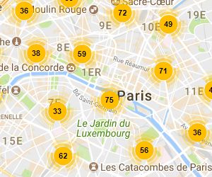

Etape 1: Choisissez un emplacement

Dans la carte ci-dessous cliquez sur un numéro qui regroupe plusieurs stations, ou vous pouvez utiliser les boutons de zoom pour voir les stations dans un endroit
Dans la carte ci-dessous cliquez sur un numéro qui regroupe plusieurs stations, ou vous pouvez utiliser les boutons de zoom pour voir les stations dans un endroit
Afficher les détails d'une station en cliquant dessus, si la station est ouverte et qu'elle a des vélos disponibles, vous pouvez cliquer sur le bouton "réserve" pour faire une réservation.
Après avoir cliqué sur le bouton "réserver", une zone de signature apparaît, signez et cliquez sur "confirmer". Une réservation est faite pour vous et vous avez 20 minutes pour récupérer votre vélo
Vous pouvez à tout moment annuler votre réservation en cliquant sur le bouton "annuler" dans le pied de page. Si vous faites une autre réservation, elle remplacera l'actuelle.
Ouverte Fermée Sélectionnée Réservation
Veuillez signer ci-dessous pour compléter votre réservation
Un vélo réservé à la station pour minute(s) et seconde(s)